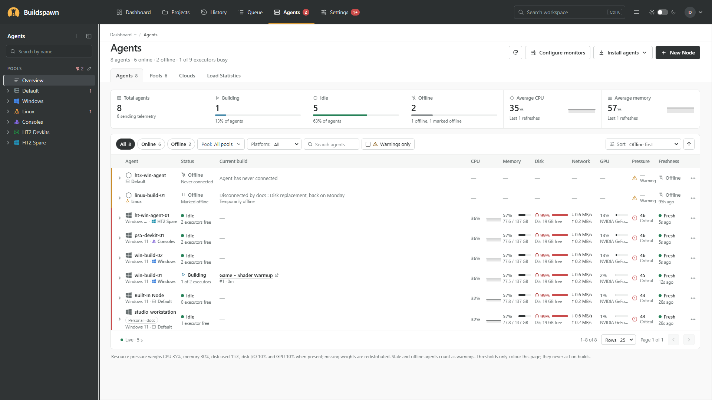
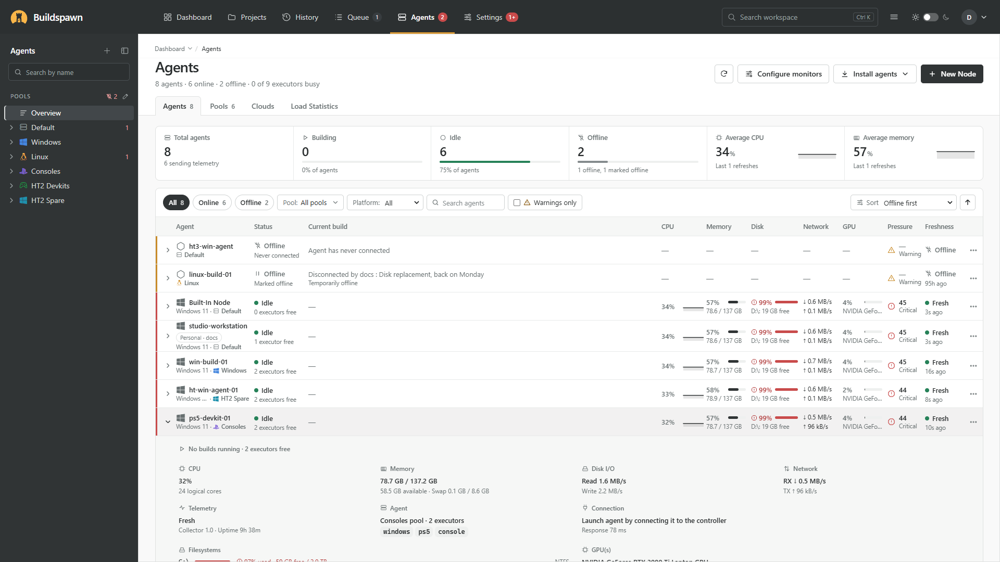
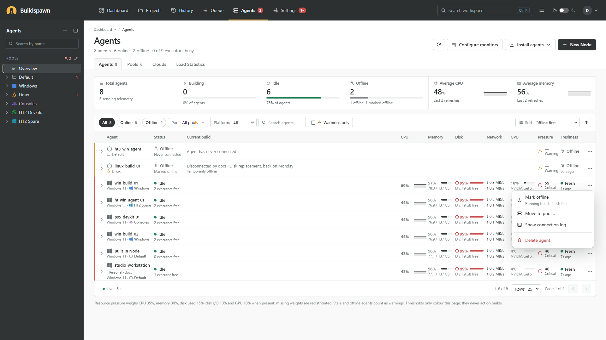
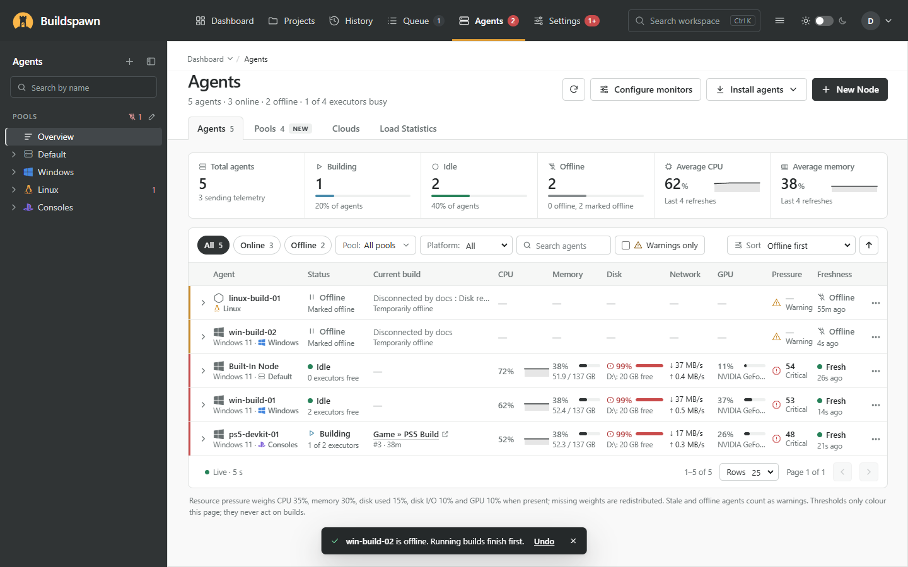
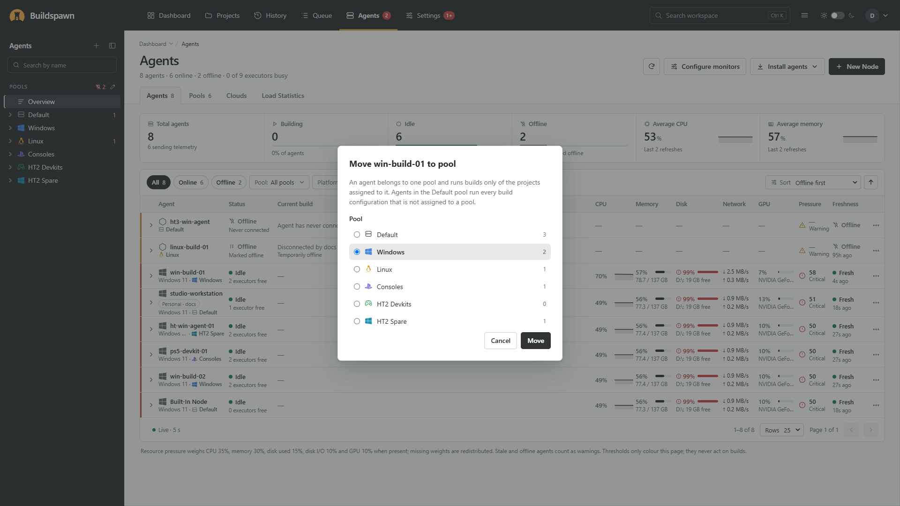
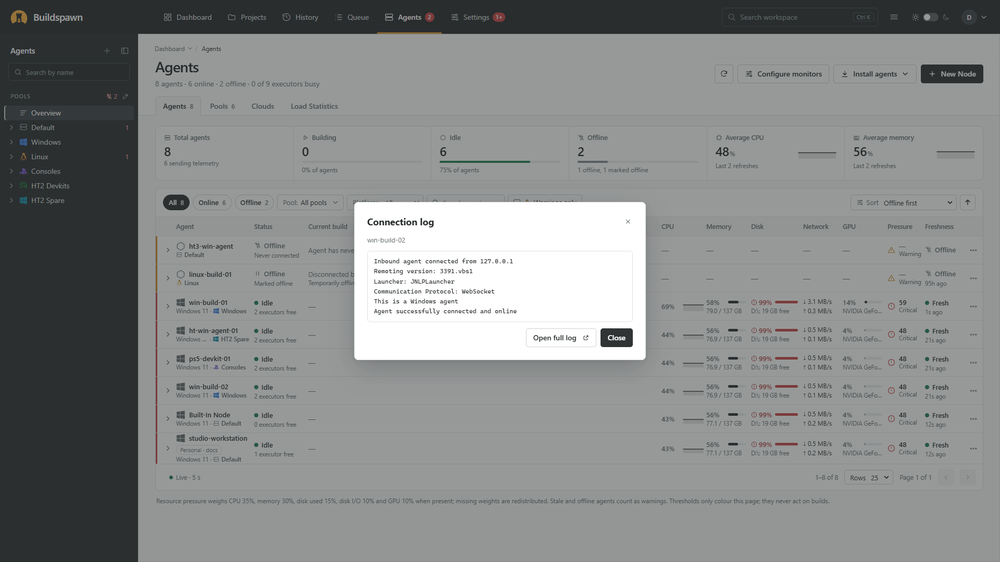

The Agents page
Agents are the machines that run your builds. The Agents page lists them all in one live table, with their health, their current builds and quick actions.
Click Agents in the top bar. A red number on it means some agents are offline.
The page at a glance
- The header counts agents, online and offline agents, and busy executors (an executor is one slot that runs one build at a time; an agent can have several).
- The buttons on the right: Refresh, Configure monitors (see Telemetry), Install agents (see Install an agent) and New Node.
- The tabs: Agents, Pools (see The Pool Scheduler), Clouds (see Clouds) and Load Statistics. An Unauthorized tab appears only when agents are waiting for approval. In the top bar, a red number on Agents counts the offline agents.
- The side panel lists your pools. See Pools.
The summary strip
Six cards sit above the list:
| Card | What it counts |
|---|---|
| Total agents | All agents, and how many send telemetry. |
| Building | Agents running at least one build, with their share of all agents. |
| Idle | Online agents with nothing to do. |
| Offline | Agents that are not connected, and how many of them were marked offline by hand. |
| Average CPU and Average memory | Across all online agents, with a small chart of the last refreshes. |
The list
Each row is one agent. The coloured bar on the left of a row shows its worst value: yellow for a warning, red for critical.
| Column | What it shows |
|---|---|
| Agent | The name, the operating system and the pool, with the pool's icon. Click the name to open the agent, or the pool to open the pool. |
| Status | Idle, Building or Offline, and how many executors are free. "Marked offline" means someone took it offline by hand. |
| Current build | The build it runs, with its number and time so far. For an offline agent, the reason. |
| CPU, Memory, Disk, Network, GPU | Live values from telemetry, with small bars and charts. |
| Pressure | One number for how loaded the agent is, from 0 to 100. It weighs CPU 35%, memory 30%, disk used 15%, disk input/output 10% and GPU 10%. |
| Freshness | How old the latest sample is: Fresh, Stale (no sample for a while) or Offline. |
The colours come from the thresholds under Configure monitors. They only colour the page; they never stop or fail a build. On the screenshots in this guide the disk shows Critical on every agent, because the demo machine's D: drive is nearly full.
The list refreshes by itself every 5 seconds (Live · 5 s at the bottom). Below it you can choose how many Rows to show per page and move between pages.

Filters, search and sorting
Use the bar above the list to find agents:
- All / Online / Offline chips, each with a count.
- Pool: one pool or all pools.
- Platform: Windows, Linux, macOS and so on.
- Search agents: type part of a name.
- Warnings only: show only agents with a warning or critical value. Offline agents count as warnings.
- Sort: the default, Offline first, puts offline agents at the top and then sorts by pressure. The arrow button flips the order.
Under the Offline filter the list shows each agent's launch method instead of its live values.
Your filters are kept in the page address. Bookmark it, or send it to a colleague, and the list opens with the same filters. The old address for disconnected agents opens the Offline filter.
Expanded rows
Click the arrow at the start of a row to open it.

The open row shows:
- Each busy executor's build: the executor number, the build with a link, a progress bar against the usual duration, the time so far and the estimate (for example 25m 56s of ~4m), the current step, and × to stop the build. Idle executors are not listed.
- Details: CPU cores, memory and swap, disk read and write, network in and out, telemetry freshness and uptime, the agent's pool, executors and labels, and its connection.
- Filesystems: every drive with how full it is.
- GPU(s), when the agent has a graphics card that telemetry can read.
- Buttons to open the agent's Telemetry tab, the agent page, its Build history, its Settings and the running build.
The row menu
Click ⋯ at the end of a row for the actions you are allowed to use on that agent.

| Action | What it does | Undo |
|---|---|---|
| Mark offline | Stops new builds from starting on the agent. Running builds finish first. | Yes |
| Bring back online | For an agent marked offline by hand: it takes builds again. | Yes |
| Reconnect | For a disconnected agent the server can start itself: tries to launch it again. | No |
| Move to pool… | Opens a dialog to put the agent in another pool. | Yes |
| Show connection log | Shows the agent's connection log in a pop-up. | No |
| Delete agent | Removes the agent after you confirm. | No |
Messages and Undo
After an action, a short message appears at the bottom of the page. For Mark offline, Bring back online and Move to pool, it has an Undo button for a few seconds.

- Click ⋯ on the agent's row and choose Mark offline.
- The row moves to the top with the status Offline · Marked offline, and the message appears.
- Changed your mind? Click Undo in the message. The agent is online again.
Anyone allowed to mark an agent offline can also bring it back online.
Move to pool

The dialog lists every pool with its icon and number of agents. Pick one and click Move. The agent now runs only builds of the projects assigned to that pool. See Pools.
Show connection log

The pop-up shows how the agent connected. Lines that report a problem, such as refused or failed, are shown in red. Click Open full log for the agent's full Log tab.
Personal machines
A personal machine (see Personal agents) is listed only for its owner and for administrators. Other users do not see it. It is marked as personal with the owner's name, and it cannot be moved to another pool.
Open one agent
Click an agent's name to open its page. It shows the connection state and the reason when it is offline, the commands to connect it, its pool, its labels and its executors. The tabs and links of the agent page:
- Status, with Connect the agent and the download for this node (see Connect an agent).
- Parameters: what the agent reported (see Labels and agent requirements).
- Telemetry (see Telemetry), Build History and Load Statistics.
- Compatible Configurations: the build configurations this agent can run.
- Configure (see Agent settings) and Delete Agent.
- Script Console, for administrators.
When the agent is paused or stopped from its tray app or terminal program, the agent page and the list say why, because agents report their state to the server every few seconds.
Tips
- Tick Warnings only each morning to see at once which machines need attention.
- To work on a machine, mark it offline first. Running builds finish, and no new ones start.
- Open a row to stop a stuck build without leaving the page.